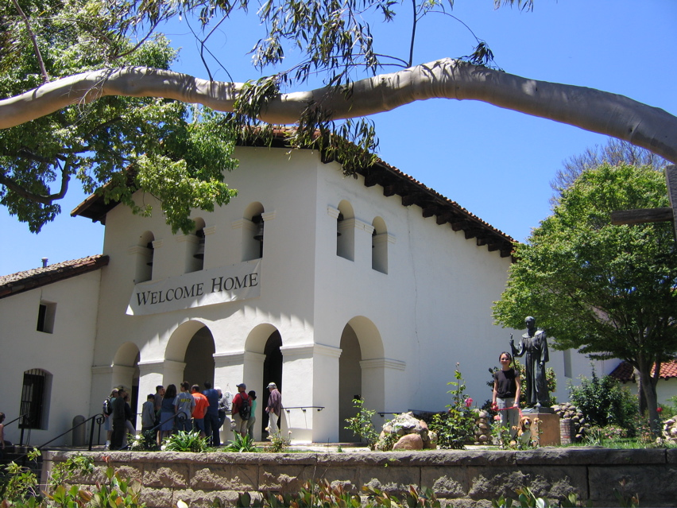

<--Previous Up

Mission San Luis Obispo de Tolosa
Huxley stands by a statue of Father Junipero Serra, who built California's missions. The SLO mission is known for its bells, whose names are Diego, Carlos, Antonio, Gabriel and Luis. We ate lunch in the plaza below. I don't know what the banner means; we had four more hours of driving to go.